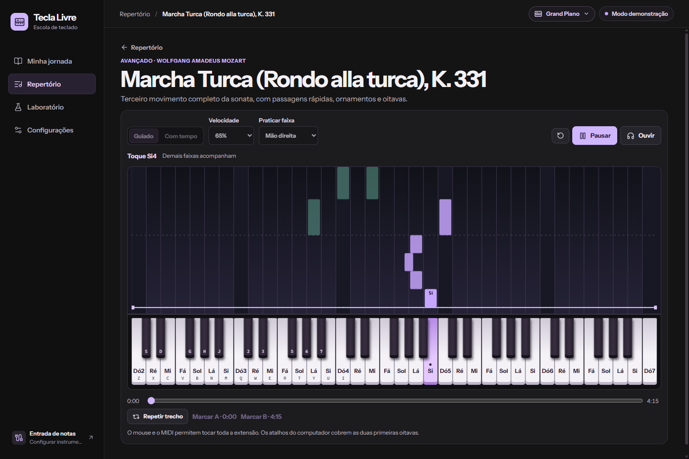

41 aulas em português
Estude ritmo, leitura na pauta, acordes e acompanhamento com demonstrações e exercícios.
Siga aulas em português, toque músicas com notas em movimento e pratique com um controlador MIDI ou as teclas do computador.
Baixar grátis para Windows Ver checksum SHA-256
Estude ritmo, leitura na pauta, acordes e acompanhamento com demonstrações e exercícios.

Diminua a velocidade, escolha a mão, repita um trecho e retome de onde parou. Você também pode importar seus arquivos MIDI.

Ouça acordes, escalas e progressões. Troque o timbre e use o pedal de sustain do controlador MIDI.
Seu progresso fica no computador. Você pode tocar com o mouse, as teclas do computador ou um controlador USB-MIDI.